地政学
バースはロンドンとブリストルの間にある英国南西部の文化都市です。国政中枢ではありませんが、世界遺産、観光、大学、保全制度を通じて、地域経済と英国の文化外交を静かに支えます。交通の結節点でもある街です。今も続きます。
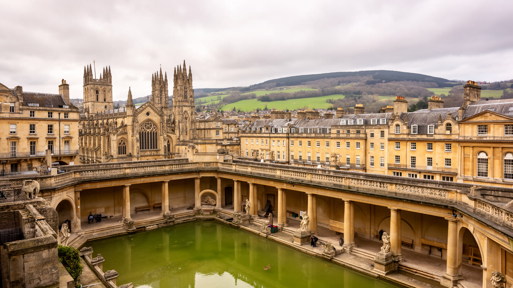
🇬🇧 英国 / イングランド / World City Atlas
ローマ浴場とジョージアン建築で知られる英国南西部の世界遺産都市です。温泉、修道院、大学、出版、観光労働、住宅価格、川と丘陵の景観が、歩ける中心部に凝縮されています。
都市の骨格
バースは大都市ではありません。ですが、古代ローマの温泉、十八世紀の社交都市、世界遺産の景観、大学都市、観光経済、住宅難が重なり、小さな中心部に英国都市の長い時間が見えます。
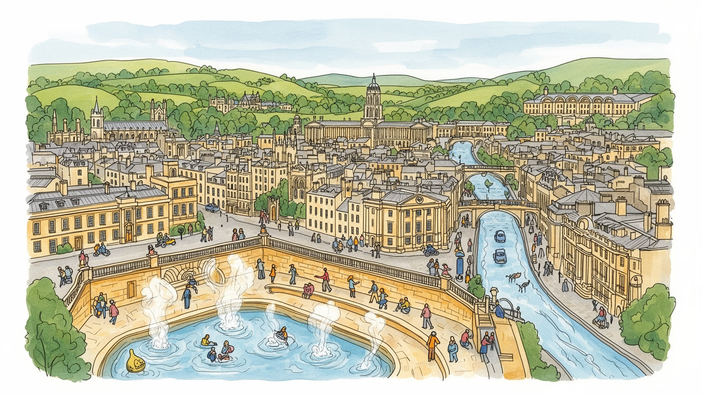
バースはロンドンとブリストルの間にある英国南西部の文化都市です。国政中枢ではありませんが、世界遺産、観光、大学、保全制度を通じて、地域経済と英国の文化外交を静かに支えます。交通の結節点でもある街です。今も続きます。
観光、大学、医療、出版、デザイン、小売、飲食、宿泊が雇用の柱です。華やかな街並みの背後で、清掃、接客、介護、厨房、バス運転、建物修繕の働き手が、訪問者と住民の毎日を支えます。賃金差も映る街です。今も続きます。
ローマ浴場、修道院、ジェーン・オースティンの記憶、音楽祭、劇場、学生文化が重なります。英国国教会の鐘と多様な移住者の礼拝、温泉の社交史が、観光名所を生活文化へ結び直します。古い石も語り続ける街です。今も続きます。
旅行者は浴場、修道院、ロイヤル・クレセント、川沿いを歩きます。一方で住民は家賃、学生住宅、交通渋滞、観光混雑、高齢化、洪水、丘の移動に向き合い、景観の美しさと生活費の重さを同時に抱える街です。その重さは今も残ります。
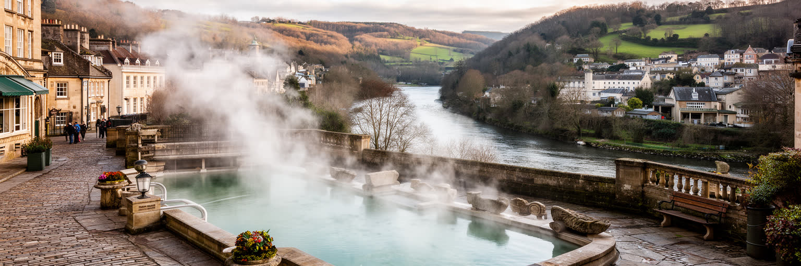
バースの都市は、エイヴォン川の谷と温泉の湧出点から始まります。丘に囲まれた地形は、街を劇場のように見せる一方、道路、住宅、洪水対策、眺望保全を難しくします。ローマ人はここをアクアエ・スリスとして整え、温泉を治療、信仰、社交の場にしました。後の時代にも、水は単なる観光資源ではなく、都市の名前、記憶、経済を支える中心であり続けました。川沿いの低地には駅、商業、橋、交通が集まり、斜面には住宅地と緑地が広がります。谷の都市であるため、少し歩くだけで街並みの高さ、風、雨水の流れが変わります。美しい石造りの中心部を見るだけでは、バースの全体像はつかめありません。水の恵み、川の危険、丘の眺望、狭い道路、保全区域の規制が互いに結びつき、都市の成長を慎重に管理させています。温泉を読むことは、古代の遺跡を眺めるだけでなく、自然条件が現在の住宅、交通、観光の選択肢をどう狭め、同時に魅力を作るかを読むことでもあります。谷の形は、街の美しさと不便さを同じ手で作っています。さらに、谷底の商業地と丘の住宅地の距離は、地図上の短さよりも坂道やバス便として経験されます。水害や暑さへの備えも、川沿いと高台では異なります。地形を意識すると、観光写真の外にある日常の動線が見えてきます。丘の緑地を残すことは眺望を守るだけでなく、雨を受け止め、徒歩の休息を作り、都市の密度を調整する意味も持ちます。
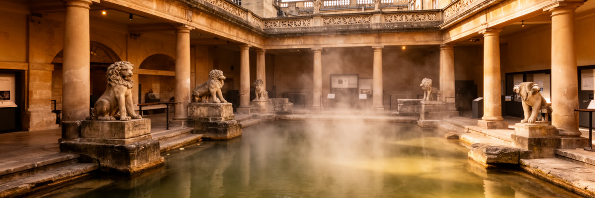
ローマ浴場は、バースを単なる美しい町ではなく、二千年近い都市の記憶を持つ場所にしています。温泉はケルト系の女神スリスへの信仰と結びつき、ローマ支配下で浴場、神殿、公共施設として整えられました。いま訪問者が見る遺構は、宗教、医療、身体、支配、交易が一つの空間に重なった証拠です。浴場は観光の中心ですが、そこには水質管理、保存技術、考古学、展示解釈、多言語案内、混雑管理という現代の仕事もあります。古代遺跡を守ることは、石を保存するだけではありません。発掘された品物をどう説明し、植民地期以前からの信仰をどう扱い、観光客の期待と学術的な慎重さをどう両立させるかが問われます。バースでは温泉が都市ブランドになりやすいが、湯の歴史は癒やしだけでなく、権力と社会階層の歴史でもあります。誰が入浴でき、誰が働き、誰の信仰が記録され、誰の身体が治療の対象になったのかを見ると、遺跡は写真の背景ではなく社会史の入口になります。浴場を歩く経験は、古代の水が現代の観光経済をなお動かしていることを実感させます。展示を支える職員や研究者は、遺物の魅力を伝えながら、過去を単純な娯楽へ縮めない説明を続けています。湯気のある空間は華やかですが、その背後には発掘、修復、警備、教育の地道な仕事があります。子ども向けの展示や音声案内も、古代を遠い物語にせず、現在の水、健康、信仰、都市管理へ結びつける役割を持ちます。
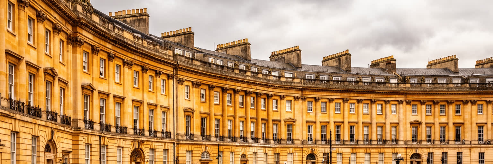
バースの見た目を決定づけるのは、十八世紀のジョージアン建築です。ロイヤル・クレセント、ザ・サーカス、クイーン・スクエア、段丘状の住宅、均整の取れたファサードは、温泉療養と社交の都市がどのように設計されたかを示します。蜂蜜色のバース・ストーンは柔らかな統一感を作りますが、その美しさは自然に残ったものではありません。採石、建築規制、修繕、景観保護、所有者の負担、観光収入、住民の合意が積み重なって保たれています。ジョージアンの街並みは上品に見えますが、当時の社交都市は階級、サービス労働、植民地経済、女性の振る舞いへの規範とも関わっていました。表通りの整った建築の背後には、台所、使用人の動線、馬車、排水、裏庭がありました。現代のバースでは、歴史的住宅が高級不動産や短期滞在の対象になりやすく、中心部で普通に暮らす人を減らす圧力にもなります。建築を読むには、外観の美しさだけでなく、その空間を維持する費用、そこで働く人、住める人と住めない人の差を見る必要があります。均整の取れた街並みは、都市の公共財であると同時に、社会的な緊張を映す面でもあります。窓枠、屋根、石壁の色まで統一されるほど、個人の改修は公共の景観とぶつかります。美を守る規則は必要ですが、その費用を誰が負担するかも都市の公平性を左右します。段丘住宅の連続は、歩く人に秩序を感じさせる一方、内部では小さな分割住戸や老朽化への対応が続きます。外観と暮らしの差が、歴史都市の現実です。
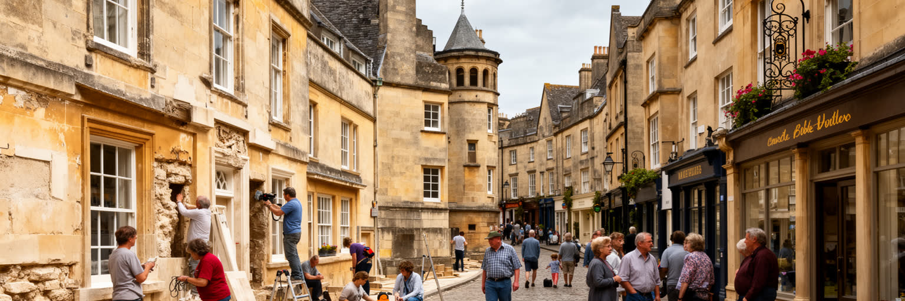
バースは単独の建物だけでなく、都市全体の景観が世界遺産として評価されています。さらに欧州の大温泉保養都市群にも含まれ、温泉文化と計画都市の歴史を国際的に示す場所になりました。世界遺産という肩書は強い観光力を生むが、同時に開発、交通、広告、建物の高さ、屋根、石材、眺望に厳しい判断を求めます。住民にとって保全は誇りである一方、修繕費、許認可、断熱改修、バリアフリー、店舗運営の制約にもなります。歴史都市を生きた街として保つには、古い姿を固定するだけでは足りません。学校、病院、住宅、公共交通、日用品店、若い世代の仕事が残らなければ、中心部は観光用の舞台に寄ってしまいます。バースの保全は、石造りの外観を守る技術であると同時に、誰の生活を中心部に残すかという都市政策です。観光客が求める「変わらない街」は、実際には毎日の清掃、修理、交通整理、雨水対策、住民との調整によって更新されています。世界遺産の価値は、過去を飾ることではなく、現在の暮らしが歴史を使い続けられる仕組みを持つかで決まります。保全の判断は専門家だけでは完結しません。商店主、借家人、学生、高齢者、障害のある人、通勤者が使える街でなければ、保存された景観は生活から離れます。遺産管理は、石の色と同じくらい日常の権利を扱う仕事です。新しい建物を拒むだけでは、住宅不足や公共施設の更新は解決しません。守るものと変えるものを公開された議論で選ぶことが、遺産都市の信頼を作ります。
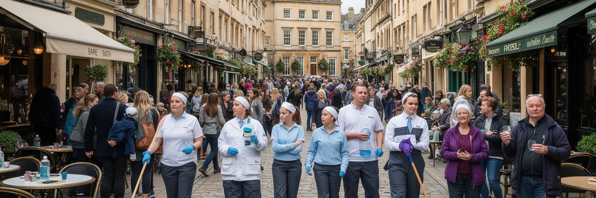
バースの経済は、観光に強く支えられています。ローマ浴場、修道院、クレセント、文学イベント、クリスマスマーケット、温泉施設、周辺の田園観光が、宿泊、飲食、小売、ガイド、交通、清掃、警備を動かします。観光は都市の収入を増やし、文化施設を支えますが、仕事の多くは季節性があり、賃金が高いとは限りません。街が混む日ほど、厨房、客室清掃、バス運転、店舗スタッフ、博物館受付、廃棄物処理の負担は増えます。訪問者が見る整った景観は、早朝と閉館後の反復作業によって保たれています。観光都市として成功するほど、短期滞在向けの住宅、土産物店への偏り、地元向け商店の減少、公共空間の混雑が問題になります。バースを観光地として読むには、消費額だけでなく、誰が働き、どこに住み、通勤し、繁忙期にどれだけ休めるかを見る必要があります。観光は都市の誇りであり、雇用の柱でもありますが、生活を圧迫すれば支持を失います。美しい街を守るには、訪問者の満足と住民の普通の買物、睡眠、移動、家賃を同じ重さで扱う必要があります。観光客の増減は小さな事業者の売上を大きく揺らし、天候や鉄道の乱れも一日の収入に響きます。安定した観光都市とは、混雑を増やすだけでなく、働く人の技能と生活を守れる都市です。地元の食材、劇場、書店、修復職人に観光の利益が届けば、訪問者の消費は地域文化を支える循環にもなります。
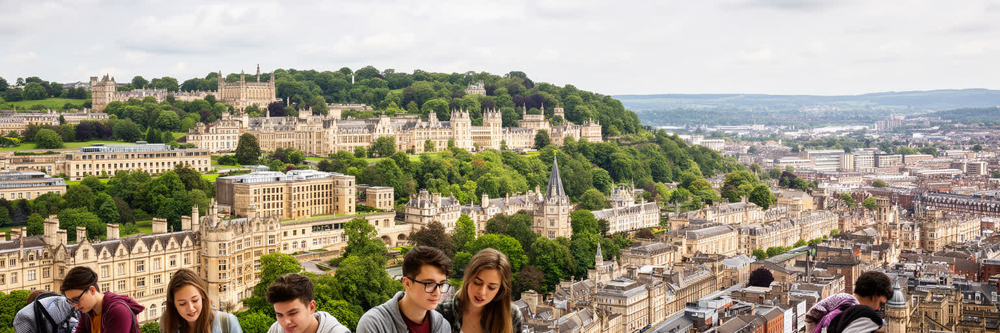
バースは観光都市であると同時に大学都市でもあります。バース大学とバース・スパ大学は、学生、研究者、教職員、留学生、創作活動、スポーツ、デザイン、教育、地域連携を街に持ち込みます。丘のキャンパスと中心部の住宅地はバスで結ばれ、学期中には通学、アルバイト、夜の飲食、図書館、制作発表が都市のリズムを変えます。大学は地域の雇用と知識産業を支え、医療、工学、社会科学、芸術、出版、デジタル分野へ人材を送ります。一方で、学生住宅の需要は賃貸市場に圧力をかけ、若い家族や低所得の働き手が中心部で部屋を探しにくくなります。学生が都市に活気を与えるほど、騒音、短期居住、地域コミュニティとの距離も課題になります。バースを知識都市として読むには、大学の評価だけでなく、学生の家賃、バス運賃、アルバイト、留学生の生活、研究と地域産業のつながりを見る必要があります。小さな都市では、大学の存在感が特に大きいです。若い世代が街を使い、学び、働き続けられるかは、観光依存に偏らない経済を作るうえでも重要です。大学は歴史都市を過去の展示物にせず、現在の議論と制作へ結び直す力を持ちます。卒業後に残れる仕事や住まいが少なければ、知識は外へ流れます。研究、創作、小企業、公共部門がつながることで、バースは観光だけに頼らない都市の厚みを持てます。学生の国際性は街の食、言語、宗教、夜の使い方にも影響します。大学都市としての成熟は、若者を歓迎しながら住民との摩擦を減らす調整に表れます。
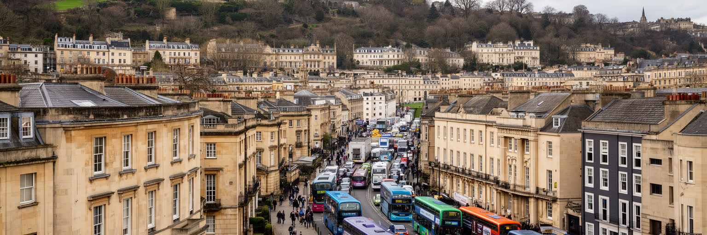
バースの暮らしを考える時、住宅は避けられません。歴史的中心部と景観の良い斜面は人気が高く、ロンドンやブリストルからの移住、観光用の短期滞在、学生需要、退職後の居住が重なり、家賃と住宅価格を押し上げます。美しい街並みは都市の資産ですが、そこで働く人が住めないなら、都市は自分を支える労働を周辺へ押し出します。介護職、ホテル従業員、飲食店スタッフ、学生、若い家族、単身者にとって、住まいと通勤の負担は大きいです。歴史的建物は断熱や改修に制約があり、光熱費、湿気、バリアフリーも問題になります。丘の住宅地では坂道とバス便が高齢者の生活を左右し、中心部では観光の混雑と夜間の騒音が住環境に影響します。バースの住宅問題は、単に戸数を増やす話ではありません。景観保全、手ごろな家賃、学生住宅、公共交通、福祉、職場への近さを一緒に考える必要があります。世界遺産都市の住みやすさは、観光客が歩く通りの美しさだけでなく、清掃や介護や厨房で働く人が街から遠ざけられていないかで測られます。住民が残ることで、歴史都市は日常の声を失わずに済みます。住宅が遠くなれば、早朝勤務や夜勤の移動は難しくなり、低賃金の仕事ほど負担が増します。手ごろな住まいは福祉政策であると同時に、観光都市の基礎的なインフラでもあります。空き家や短期貸しをどう扱うか、郊外にどの密度で住宅を増やすかは、景観と生活の折り合いを問う政治的な判断になります。
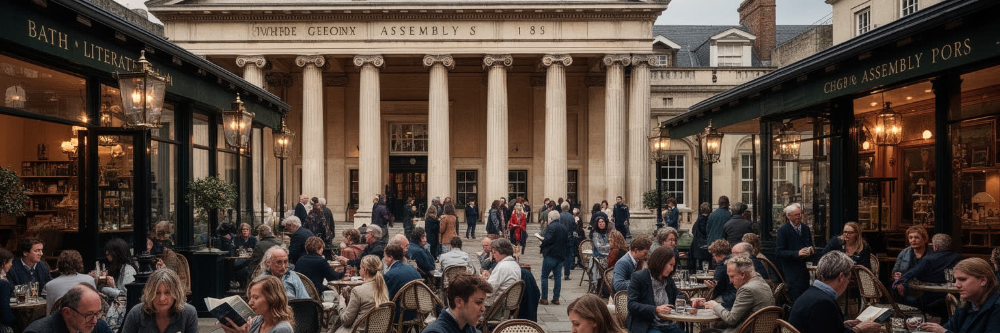
バースは文学と社交の記憶でも知られます。ジェーン・オースティンはこの街に滞在し、温泉保養地の礼儀、結婚市場、階級、退屈、見栄を鋭く観察しました。十八世紀から十九世紀のバースは、療養だけでなく、舞踏会、劇場、散歩、読書、噂、結婚交渉が行われる社交都市でした。街路の美しさは、そのまま社会的な視線の強さでもありました。誰がどこを歩き、誰と会い、どの広間に入れるかが、都市空間の使い方を決めました。現代の文学観光はオースティンの名を街の魅力にしていますが、作品の面白さは単なるロマンチックな景色ではなく、礼儀正しい社会の中にある不平等や経済的な不安を読む点にあります。バースの劇場、書店、フェスティバル、カフェ、大学の創作活動は、この文学的な観察の伝統を現在へつなぎます。文化は過去の名声に頼るだけでは続かありません。地元の作家、学生、俳優、音楽家、読者が発表と議論の場を持ち、観光客向けの記念品だけでなく、住民の知的な生活を支える時、文学都市としての厚みが残ります。バースの文化を読むには、優雅な建築の中で交わされる会話の力と、そこから外された人の沈黙も見る必要があります。文学イベントが続くには、会場、書店、学校、図書館、手ごろな制作場所が必要です。文化は記念碑ではなく、読者と作り手が街で出会う仕組みとして保たれます。社交の街という記憶は、いまの観光客同士の会話や学生の発表にも形を変えて残ります。その場を開いておくことが、文化都市の実力になります。
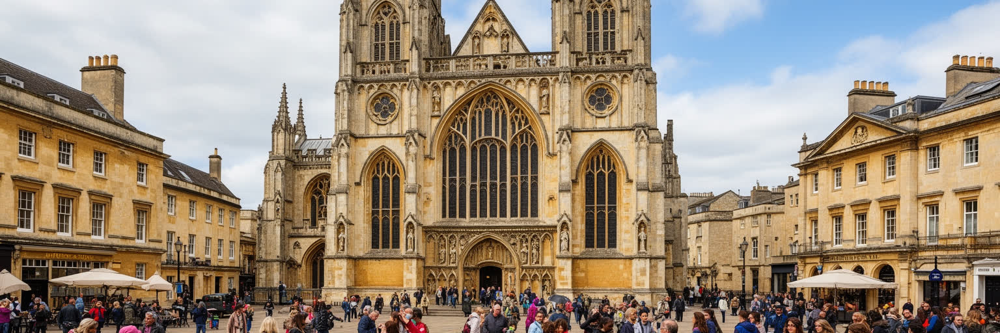
バース修道院は、都市の中心で信仰、記憶、観光、公共空間を結びつけます。尖塔と窓は街の目印であり、礼拝、音楽、追悼、慈善、学校行事、観光案内が同じ建物で行われます。英国国教会の伝統は強いが、現代のバースには多様な宗教、無宗教の住民、留学生、移民、短期滞在者が暮らします。信仰は建築だけに宿るのではなく、食事支援、孤立への相談、葬儀、合唱、ボランティア、冬の暖かい居場所として働きます。観光客が修道院を写真に収める横で、地元の人は鐘の音や広場の市場を日常の時間として受け止めます。宗教施設は歴史的景観の一部であると同時に、中心部の公共性を支える場所でもあります。バースを信仰から読むには、キリスト教建築の美しさだけでなく、誰が助けを求められるか、誰が広場に居場所を持てるかを見る必要があります。観光都市では中心部が消費の場に偏りやすいが、祈り、追悼、相談、無料の音楽、静かな休息が残ることで、街は売買だけではありません時間を保ちます。修道院前の広場は、歴史を眺める場所であり、現在の共同体が試される場所でもあります。宗教的な言葉を共有しない人にも、静かに座れる場所や助けを求められる窓口は意味を持ちます。中心部の公共性は、消費しない時間を許す空間によって支えられます。鐘の音、合唱、追悼の掲示は、街の忙しさを一度止める働きもあります。観光名所が祈りの場所であり続けることが、中心部の時間に深さを与えます。
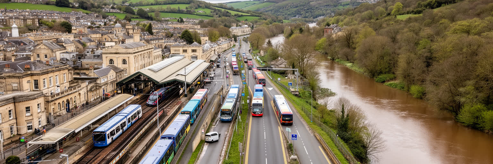
バースは歩いて楽しめる都市ですが、交通と気候の課題は重いです。鉄道はロンドン、ブリストル、ウェールズ方面を結び、観光客と通勤者を運びます。市内ではバス、徒歩、自転車、タクシー、配送車が狭い谷の道路を共有し、丘の住宅地へ上がる移動は高齢者や学生にとって重要な生活条件になります。歴史的中心部は車を大量に受け入れるようにはできておらず、大気汚染、渋滞、駐車、観光バス、荷さばきの調整が欠かせません。気候面では、雨の多い西岸海洋性の気候とエイヴォン川の存在が、洪水、湿気、石造建築の劣化、斜面排水に影響します。温暖化で強い雨や暑い日が増えれば、古い住宅の断熱、日陰、涼める公共施設、川沿いの安全がさらに重要になります。バースの気候適応は、大きな堤防だけでなく、排水路の手入れ、緑地の保全、徒歩空間、公共交通の信頼性、歴史建築の省エネ改修として進む必要があります。谷の街では、移動と水の管理が生活の質を直接左右します。観光客が歩きやすい街は、住民が通院し、通学し、働きに行ける街でもなければなりません。交通政策は観光の流れだけでなく、夜勤者、学生、高齢者、障害のある人の移動を支える必要があります。気候対策も同じく、歴史景観を守りながら弱い立場の人を暑さと水害から守る仕事です。駅前と川沿いの更新では、歩行者の安全、荷さばき、緊急車両、雨水の逃げ道を同時に見る必要があります。移動の設計は、防災の設計でもあります。
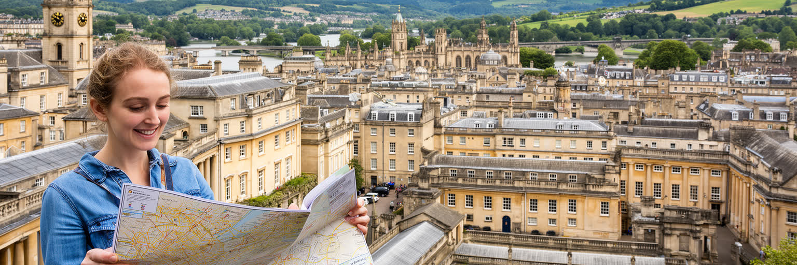
バースを読む面白さは、都市の規模よりも時間の重なりにあります。ローマ浴場は古代の信仰と水の技術を伝え、修道院は宗教と公共空間を支え、ジョージアン建築は社交、階級、都市計画の記憶を残します。大学は若い世代と研究を街に入れ、観光は収入と混雑を同時に生みます。エイヴォン川と丘陵は景観を美しくしながら、交通、洪水、住宅地の移動を難しくします。バースは世界遺産として保存される都市ですが、保存されるべきものは石の外観だけではありません。住民が中心部で買物をし、学生が学び、観光労働者が通い、教会や劇場や市場が日常の用事を受け止めることも、都市の価値です。美しい街ほど、見えにくい労働と生活費の問題を隠しやすいです。だからバースを歩く時は、浴場やクレセントの完成された景色だけでなく、バス停、学生住宅、清掃の時間、川の水位、修繕中の石壁を見るとよいです。そこに、英国の歴史都市が過去を守りながら現在の生活都市であり続けるための条件が見えてきます。バースの核心は、優雅さと制約が同じ街路に並んでいることにあります。小都市であるからこそ、観光、大学、住宅、保全、気候の衝突は見えやすいです。過去を大切にする力が、現在の住民を押し出さない形で働くかが、この街の成熟を決めます。温泉の湯、石の外壁、丘の緑、学生の声、ホテルの裏方仕事を一緒に見ると、バースは小さくても多層的な世界都市の縮図として読めます。